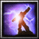

| Requisitos para uso de Itens e Equipamentos | ||||
|---|---|---|---|---|
| Inferior | Normal | Superior | Excepcional | Elite |
| Nível 1 | Nível 3 | Nível 5 | Nível 7 | Nível 9 |
| Qualidade | Inferior | Normal | Superior | Excepcional | Elite |
|---|---|---|---|---|---|
| Arma* | +4 Ataque | +8 Ataque | +12 Ataque | +16 Ataque | +20 Ataque |
| Escudo (50%) | 4 Bloqueio | 8 Bloqueio | 12 Bloqueio | 16 Bloqueio | 20 Bloqueio |
| Armadura Leve | +5 Proteção +1 Esquiva | +10 Proteção +2 Esquiva | +15 Proteção +3 Esquiva | +20 Proteção +4 Esquiva | +25 Proteção +5 Esquiva |
| Armadura Média | 10 Proteção | 20 Proteção | 30 Proteção | 40 Proteção | 50 Proteção |
| Armadura Pesada | 20 Proteção -1 Esquiva | 30 Proteção -2 Esquiva | 40 Proteção -3 Esquiva | 50 Proteção -4 Esquiva | 60 Proteção -5 Esquiva |
| * o jogador pode escolher qualquer arma comum no momento da compra; armas de Magos (geralmente cajados) ocupam as duas mãos e aumentam o ataque mágico ao invés de físico. Requisitos Qualidades Inferior/Normal/Superior/Excepcional/Elite requerem Nível de Personagem mínimo de 1/3/5/7/9 para serem equipados. Armaduras Pesadas requerem Força mínima de 1/2/3/4/5 para serem equipadas. Escudos requerem Perícia com Escudos para serem utilizados. | |||||
| Amuletos Mágicos | ||
|---|---|---|
| Pedra da Vitalidade | Vida +8 |
| Talismã Místico | Mana +5 |
| Anel da Precisão | Precisão +1 |
| Talismã da Evasão | Esquiva +1 |
| Manopla Reforçada | Ataque +3, Ataque Mágico +3 |
| Elmo de Batalha | Proteção +5 |
| Capuz Xamânico | Resistências +10 |
| Amuletos Raros | ||
| Cinturão do Campeão | Força +1 |
| Botas de Quel'Thalas | Destreza +1 |
| Manto Arcano | Inteligência +1 |
| Esfera Verdejante | Vitalidade +1 |
| Tomo Místico | Habilidade Especial (aleatória) +1 |
| Amuletos Lendários | ||
| O Desolador | 10% Acerto Crítico |
| Medalhão da Coragem | Reduz em 1 todo dano recebido |
| Astrolábio | Reduz em 1 PM o custo de suas habilidades durante o combate |
| Berrante Satânico | 10% Roubo de Vida |
| Mandala de Ossos | 10% Vampirismo mágico |
| Malevolência | Silencia um inimigo por 1 rodada |
| Coração e Alma | +10% Vida e Mana máximas |
| Totem Shamânico | 10% Acerto Crítico com magias |
|  | Mente Sobre a Matéria | 30% do dano é deduzido da mana antes da vida |
| Monóculo | 5 Precisão |
| Relíquia Sagrada | +25% em Curas e Escudos conjurados |
| Poções Mágicas | |||||
|---|---|---|---|---|---|
| Qualidade | Inferior | Normal | Superior | Excepcional | Elite |
| Cura | 10 PVs | 20 PVs | 30 PVs | 40 PVs | 50 PVs |
| Mana | 5 PMs | 10 PMs | 15 PMs | 20 PMs | 25 PMs |
| Explosiva | 6 Ataque | Normal | Superior | Excepcional | Elite |
| Corrosiva | -10 Proteção | -15 Proteção | -20 Proteção | -25 Proteção | -30 Proteção |
| Venenosa | Inferior | Normal | Superior | Excepcional | Elite |
| Elixir | Inferior | Normal | Superior | Excepcional | Elite |
| Fumaça | Inferior | Normal | Superior | Excepcional | Elite |
| Gosmenta | Inferior | Normal | Superior | Excepcional | Elite |
| Pergaminhos Mágicos | |||||
| Qualidade | Inferior | Normal | Superior | Excepcional | Elite |
| Ventos Revigorantes | 10 PVs | 20 PVs | 30 PVs | 40 PVs | 50 PVs |
| Explosão de Chamas | 6 Ataque | 12 Ataque | 18 Ataque | 24 Ataque | 30 Ataque |
| Barricada | 12 PVs | 24 PVs | 36 PVs | 48 PVs | 60 PVs |
| Armadura Fantasmagórica | 10 Resistência | 20 Resistência | 30 Resistência | 40 Resistência | 50 Resistência |
| Forma Demoníaca | Ataque +1d6 | Ataque +2d6 | Ataque +3d6 | Ataque +4d6 | Ataque +5d6 |
| Aprimoraramento Arcano | AtaqueM +1d6 | AtaqueM +2d6 | AtaqueM +3d6 | AtaqueM +4d6 | AtaqueM +5d6 |
| Onda Debilitante | Ataque -4 | Ataque -8 | Ataque -12 | Ataque -16 | Ataque -20 |